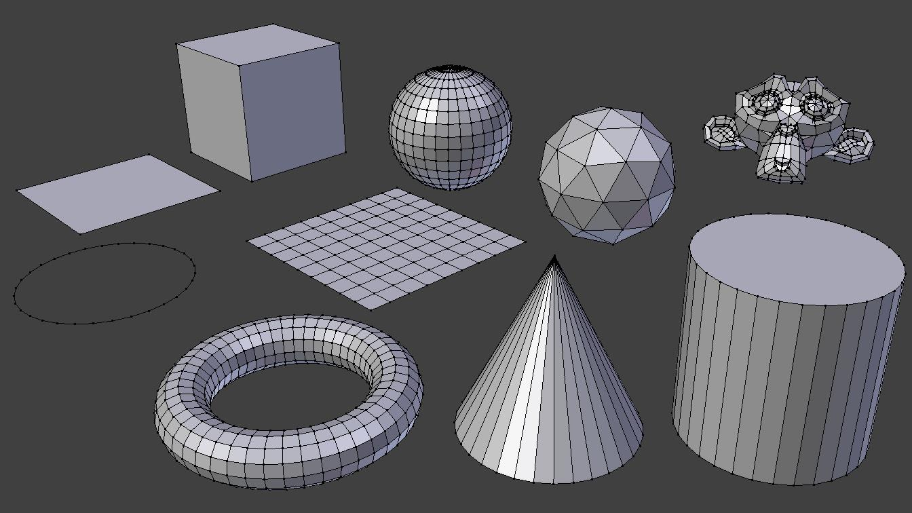
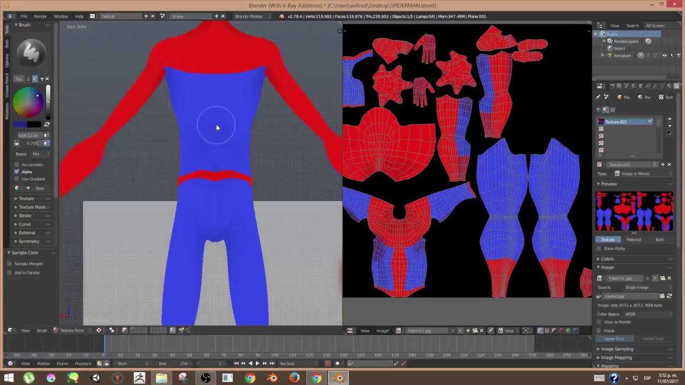
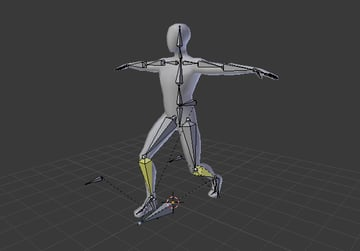
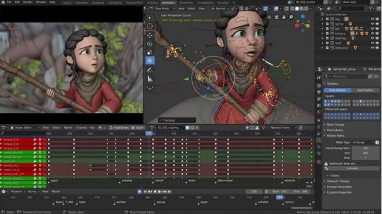
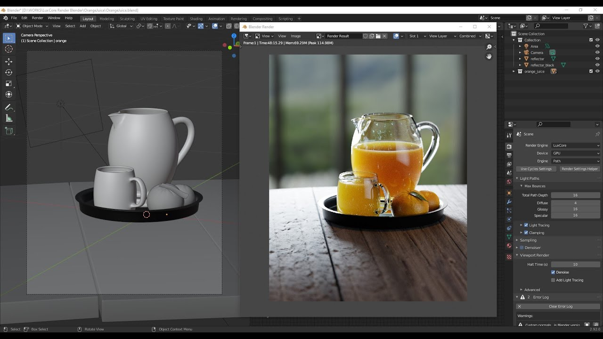

El modelatge és la creació d'objectes 3D donant forma i manipulació de
malles (col·leccions de vèrtexs i arestes que defineixen la forma d'un objecte).
Algunes de les eines de modelatge més comunes a Blender inclouen:
Extrusió: permet crear cares i vores noves a partir d'una selecció existent.
Escultura: permet modelar objectes utilitzant gestos amb el ratolí com si estiguessis treballant amb argila.
Transformar: permet moure, escalar i girar objectes i seleccions.
Booleanes: permet crear nous objectes a partir de la combinació de dos o més objectes existents.

Les textures de Blender són imatges que s'apliquen a la superfície
d'un objecte 3D per donar-li detall i realisme. Poden ser utilitzades per simular diferents tipus de materials com a fusta,
pedra, metall, etc.
Per aplicar una textura a un objecte a Blender, primer heu de crear o importar l'objecte a la vostra escena. Després, heu
d'anar a la finestra "Propietats" i seleccionar l'objecte al qual voleu aplicar la textura. A la pestanya "Materials" podràs
crear un nou material o seleccionar-ne un de existent. Un cop seleccionat el material, podràs anar a la pestanya "Texture" i
afegir una nova textura fent clic al botó "New".
Des d'aquesta pestanya podreu seleccionar el tipus de textura que voleu aplicar (per exemple, imatge, vídeo, procedimental,
etc.) i configurar-ne els paràmetres. Un cop configurada la textura, heu d'anar a la vista 3D i assegurar-vos que a la barra
d'eines està seleccionada "Material" per poder visualitzar els canvis.

El rigging a Blender és el procés de crear un sistema de control per animar un personatge o model 3D.
Consisteix en la creació d'esquelets i controls que permeten moure i animar els diferents elements del model de manera precisa i controlada.
Per començar a fer rigging a Blender, has de tenir un model 3D llest per ser animat. Després, has d'entrar en el mode "Edit mode" i seleccionar els
punts, cares o vores que vols utilitzar com a punts de control per al teu esquelet. A continuació, has d'utilitzar eines com ara "Armature" per crear
els ossos i "Weight Paint" per assignar els punts de control als ossos.
Un cop creat l'esquelet, heu de configurar els controls d'animació. Podeu utilitzar eines com "Constraints" per restringir el moviment d'un os a una
determinada direcció o "Ik" per crear un sistema d'"Inverse Kinematics" que permeti controlar una cadena d'ossos mitjançant el moviment d'un sol punt de control.

L'animació a Blender és el procés de crear moviment i acció en un model 3D mitjançant l'edició dels valors de posició, rotació i escala dels diferents elements del model a diferents moments del temps.
Per començar a animar a Blender, has de tenir un model 3D llest per ser animat i un sistema de rigging configurat. Després, heu d'entrar en el mode "Pose mode" per poder moure i animar l'esquelet i els controls creats.
Un cop a "Pose mode", pots utilitzar eines com "Keyframe" per fixar la posició, rotació o escala d'un os o control en un moment específic del temps. Podeu moure el cursor de temps a la "Timeline" per crear diferents fotogrames clau i així anar creant l'animació.

La renderització a Blender és el procés de convertir una escena 3D en una imatge o seqüència d'imatges. Quan s'ha creat una escena 3D i s'han aplicat materials, textures, llums i configurat la càmera, es pot utilitzar el motor de renderització de Blender per generar una imatge final d'alta qualitat.
Per començar a renderitzar a Blender, has de tenir una escena 3D llista. Després, has d'anar a la finestra "Properties" i seleccionar el motor de renderització que vols utilitzar. Blender compta amb diversos motors de renderitzat com Cycles, Eevee, i Workbench. Cadascun d'aquests motors té les seves pròpies característiques i configuracions, per tant has de triar el que s'adapti millor a les teves necessitats.
Un cop seleccionat el motor de renderitzat, heu de configurar les opcions d'il·luminació, materials, textures, etc. i ajustar la configuració de la càmera per obtenir la perspectiva desitjada. Podeu ajustar la resolució de la imatge final, el nombre de samples per a la il·luminació i les ombres, el format de sortida i altres paràmetres.
